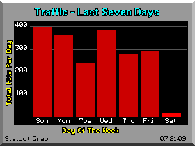
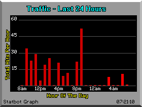
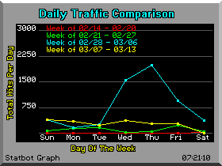
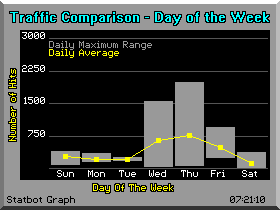
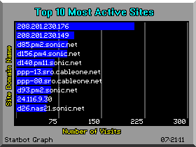
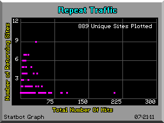
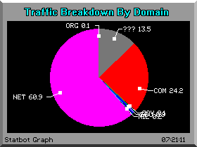
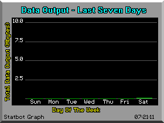

Welcome to the Statbot Graph Library. Each graph in this library is updated by Statbot once every ten minutes, so the information displayed by all the graphs found here will always be accurate.
This Vertical Bar Graph shows the total traffic recorded over the past week, with specific information displayed for each day. The highlighted bar (farthest to the right) shows the current total for today. 
This Vertical Bar Graph shows the total traffic recorded over the past 24 hours, with specific information displayed for each hour. The highlighted bars indicate today's traffic. 
This Horizontal Line Graph shows the daily traffic compared over the last four weeks. The legend at the top of the chart indicates the color of each week's line plot. 
This Vertical Bar Graph compares the traffic generated on a specific day of the week. Each day's total traffic is plotted, with the color markers on the bars showing the most traffic ever recorded for that day, the least traffic ever recorded for that day, and the overal average traffic recorded for that day. 
This Horizontal Bar Graph shows the 10 most active sites generating traffic. The sites are ranked in order from top to bottom, with the most active site listed in the top position. Each site's domain name or IP address is displayed on it's associated bar. 
This Scatter Graph shows the amount of repeat traffic by plotting the number of times a site visits versus the number of days the site has visited. As the site becomes more popular, the data points will move from the lower left towards the upper right. 
This Pie Graph shows the amount of traffic generated by each Internet domain. The domain extension is displayed, along with the calculated percentage of traffic generated. 
This Vertical Bar Graph shows the total amount of data that has been downloaded from the site. This Graph has been configured to tally all HTML pages and all GIF images referenced by those pages. 